Part 1: Cannes and Theoule-sur-Mer
 | | This stretch of sandy beach at one end of La Croisette in Cannes is very frequented as it is one of the few beaches open to the public along the world-famous esplanade. |
While the three top places to visit in the French Riviera are undoubtedly Cannes, Nice and Monaco (it's hardly imaginable for anyone to visit one without visiting the other two cities) you might also want to take a train ride to Ventimiglia which is the border town with Italy. Then there are other places such as Antibes, St-Raphael or St-Tropez, home to the legendary BB (Brigitte Bardot). Not to mention Juan-les-Pins, which hosts one of the top jazz festivals in the world every July.
In fact travelling all over the French Riviera is real easy as there is a train every 30 minutes or so running between Cannes and Ventimiglia stopping at Juan-les-Pins, Antibes, Nice, Monaco and Menton on the way.
If you are a swimming enthusiast be aware that most of the beaches along the famous Croisette in Cannes are private but you need only walk along the coast (from McDonalds) up towards La Bocca a couple of kilometers away to find expansive stretches of clean and sandy beaches all the way that are open to the public.
In case you do not know, the beaches in Nice are not at all the sandy type so for your swimming purposes better stay in Cannes than in Nice where the beaches are covered with huges pebbles (what the French call galets) which make walking along them bare-footed almost an acrobatic feat.
| CANNES IN PICTURES |
|---|
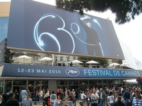
Cannes is of course famous for its International Film Festival held every May. Full details here. |
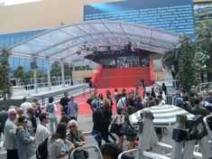
The legendary steps on the red carpet that is the focus of all eyes during the Cannes Film Festival. |
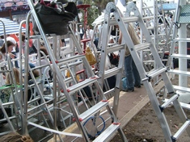
Ladders are chained in front of the red carpeted steps to ensure a vantage point for photographs in the evening. |
| CANNES LANDMARKS |
|---|
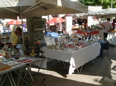
There is a lively square at one end of the Croisette (near McDonalds) where a number of stalls sell all kinds of ornamental objects and antiques. |
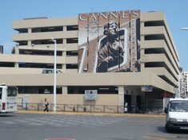
Instead of the typical town hall clock Cannes has an innovative poster-style clock in keeping with the seventh art. (The cinema was added to the other 6 arts - architecture, sculpture, painting, music, dance and poetry). |
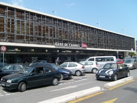
As Cannes has no airport the only way to arrive there is either by car, bus or train so the railway station is always a hive of activity. |
| WHERE THE STARS STAY IN CANNES |
|---|
1. The Martinez Hotel
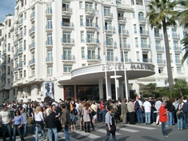
These three star-studded hotels (called palace in French because of their high standing) are all located along the Croisette and it is in one of these three hotels that you are likely to catch sight of the stars attending each year's Cannes Film Festival.
|
2. The Majestic Barriere Hotel
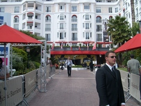
As a result there are always huge crowds at their entrances as cinema fans, camera in hand, wait for hours under the sun in the hope of catching a glimpse of their favourite stars as they enter or leave the hotels.
|
3. The Carlton Hotel
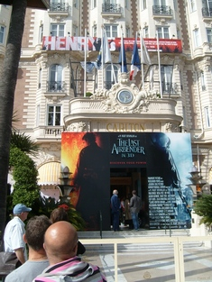 |
Theoule (also known as Theoule-sur-Mer) is only 15 kms or so from Cannes though the road is along a winding landscape as it is situated high up on a corniche. There are mountain tracks and footpaths ideal for long-distance hiking which will appeal to nature lovers as everywhere you go there are commanding views of the sea coast and mountains. Not far from Theoule is the village of Mandelieu-La Napoule.

Pierre Cardin's famous bubble house in Theoule-sur-Mer. |
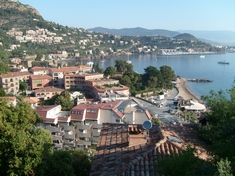
Theoule offers a commanding view of the mountain and sea. |
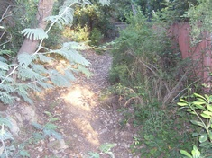
Theoule possesses a number of footpaths for long-distance hiking. |
|
|
|